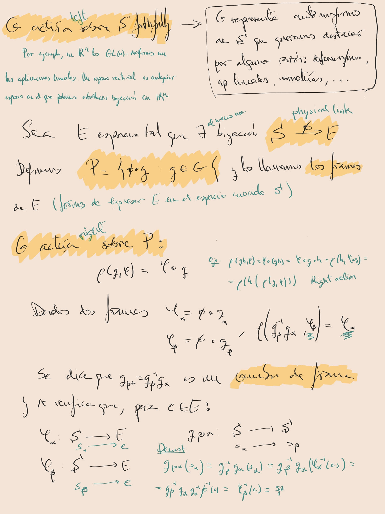
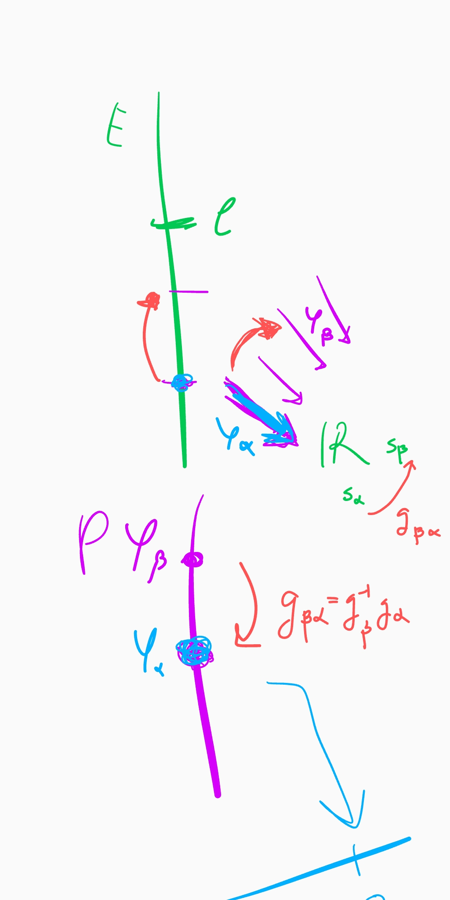

See the key example Time zones example.
Gauge theory is a term that refers to a quite general type of theories in physics which share some key concepts. In this note we are going to name them, relating them with their mathematical counterpart.
In a gauge theory we start with a manifold $M$ that represents, usually, space, time or spacetime, and a G-bundle over it
$$ \pi: E\longrightarrow M $$with typical fibre $S$. The physical situation that we are dealing with determines an atlas $\{(U_{\alpha},\phi_{\alpha})\}$. The fibre $E_m$ is called the internal space for $m\in M$ and $G$ is called the gauge group of the theory. A section $\sigma: M\rightarrow E$ is called a matter field and represents an observable quantity.
A local (global) section of the associated principal bundle $P$,
$$ p:U\longrightarrow P $$is called a local (global) gauge, and the choice of such a section is called gauge fixing. As it is said here, it let us to speak of the components of the matter field respect to this gauge fixing. In a sense, fixing a gauge is like specifying a reference frame in $E_m$ for every point $m$ of the manifold.
Given any other gauge $p'$ defined on $U$ we can define a map
$$ \gamma: U \longrightarrow G $$such that $p(m)=p'(m) \cdot \gamma(m)$, and we call it a gauge transformation.
Observe that given a trivialization $(U_{\alpha},\phi_{\alpha})$ of $E$ we have the associated local $G$-frame
$$ p_{\alpha}:U_{\alpha}\longrightarrow P $$and then, any local matter field
$$ \sigma: U_{\alpha}\longrightarrow E $$can be expressed by
$$ \tilde{\sigma}_{\alpha}:U_{\alpha}\longrightarrow S $$given by the components of $\sigma$ respect to the $G$-frame $p_{\alpha}$:
$$ \tilde{\sigma}_{\alpha}(m)=p_{\alpha}(m)^{-1}(\sigma(m)) $$See the note principal bundle for more details.
A principal connection in $P$, given by an horizontal distribution $H$ or a global $\mathfrak{g}$-valued 1-form $\omega$, both related by $H_u P=Ker(\omega(u))$, is called a gauge connection. It provides us with a mechanism to identify $G$-bases at different points of $M$ as being the same.
We can express $\omega$ respect to a chosen local gauge $p$, obtaining the 1-form $p^*(\omega)$ called the gauge potential (or Yang-Mills field, following [Schuller 2013] page 185). The 2-form obtained by exterior differentiation is called the gauge field or gauge strength tensor.
1. The time zone model. See me paper attempt.
2. Physical gauge theories describe fermions ("particles") as complex-valued functions on a principal bundle over space-time, and bosons ("forces") as principal connection on a principal bundle (see [Sharpe 1991] page 172).
3. See the meteor tracking problem at [Sharpe 1991] and [xournal 130]


Author: Antonio J. Pan-Collantes
INDEX: